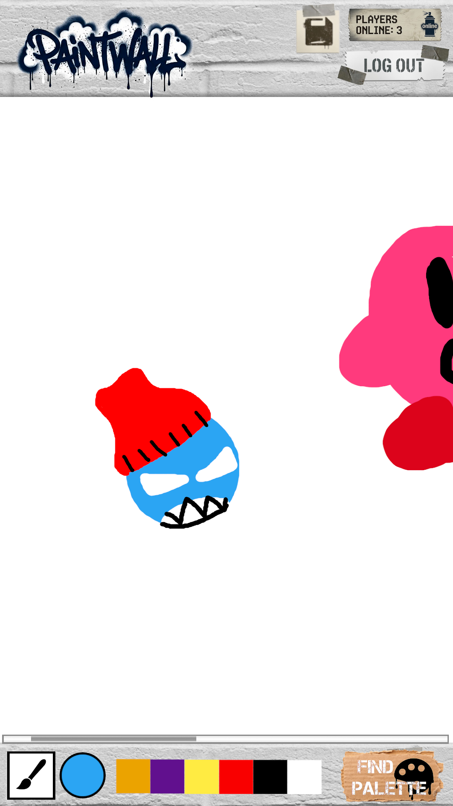

Co-op Graffiti Canvas
Shared digital canvases such as r/place have become massive community events, but they are time-limited by nature. What if there was a public canvas that simply… stayed? Paintwall is a public digital graffiti wall where every pixel remembers who drew it. Featuring digital paint tools, a real-time shared canvas, and individual attribution for every drawing, Paintwall is a fun and creative application that showcases the power of WebSocket and individual artists.

Key Features
- Real-time collaborative canvas — watch other users' strokes appear live as they paint, with no refresh needed
- Full attribution — click any painted pixel to see exactly who drew it and when
- Zero-friction identity — jump in with just a username; add a password only if you want to protect it from being used by others
- Color palette suggestions — pull complementary color schemes from a third-party color API while you paint
- Permanent canvas — unlike time-limited events, the wall persists between sessions instead of resetting
Technologies
- HTML
- Semantic page structure for the wall, login, and leaderboard views.
- CSS
- Styling for the drawing tools and a responsive layout for mobile and desktop.
- React
- Component-based views that route between logged-out and logged-in states without a page reload.
- Service
- A backend with endpoints for login/register, canvas state, pixel ownership, and color suggestions.
- DB
- Stores pixel ownership, user accounts, and session tokens.
- WebSocket
- Streams live strokes and viewer counts to every connected browser.